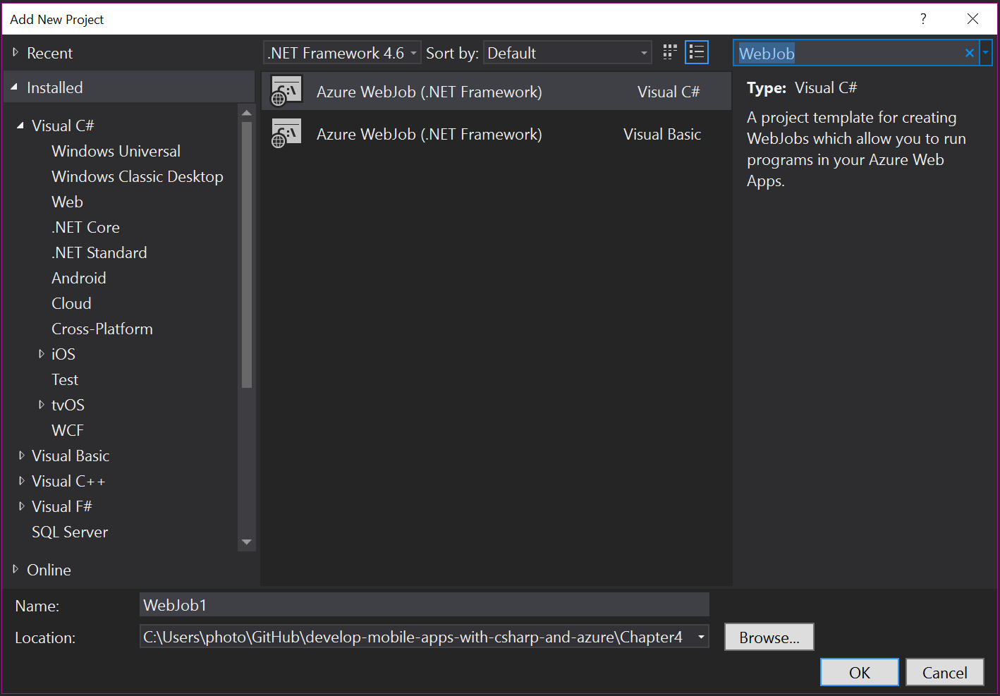
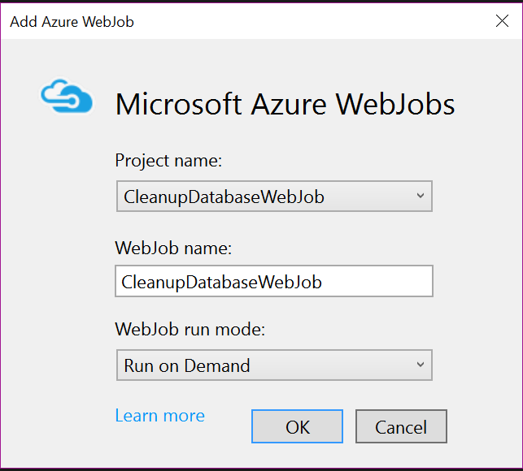
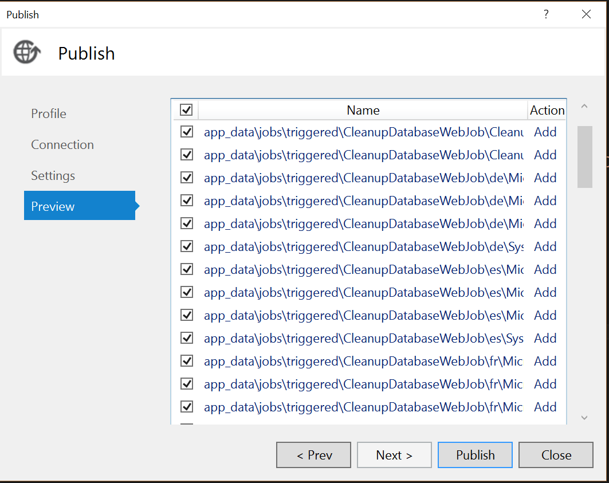

WebJobs
I'd like to think that my mobile backend is self-managing. Just like the App Service it is running on, it cleans up after itself, always works and never needs a backup or maintenance. Alas, some things can't be encoded in a client to server transaction. For example, in chapter 3, we discussed offline synchronization and the need for soft delete. The soft delete process just marks the records as deleted. In a busy database, those deleted records still take up space and resources during searches. One of the maintenance tasks we need to do is to clean up the database.
There is almost always a need for backend processing that is not related to the client-server communication. That is where Azure Functions and WebJobs come in. They handle the custom processing that is not initiated by a mobile client. There are several examples aside from the aforementioned soft delete cleanup:
- You upload files and want to process them before letting other users download them.
- You want to do sentiment analysis or other machine learning on incoming database records.
- You need to do workflows like order fulfillment.
- You need to handle data securely and cannot transmit it to the mobile client for processing.
In all these cases, the initiation may come from the mobile client or it may be scheduled. However, the defining characteristic of these requirements is that the code must be run asynchronously (the mobile client is not waiting for the result) and may take longer than the time for a normal request.
You can consider Azure Functions as "WebJobs as a Service". WebJobs run on the same set of virtual machines that are running your mobile backend. They have access to the same resources (like CPU and memory), so they can interfere with the running of your app. Azure Functions can run this way as well, but they really take off when running in Dynamic Compute mode (which is the default). In Dynamic Compute, they run in spare compute power and potentially on a completely different set of virtual machines, so they don't interfere with your mobile backend.
I recommend WebJobs for clean-up or maintenance tasks - things like cleaning up the database on a regular basis. Event-driven tasks should be handled by Azure Functions.
A Database Clean Up WebJob¶
As an example WebJob, let's implement the database clean-up process as a WebJob. This will run on a regular basis (say, once a day) and during processing, it will delete all records in our TodoItem table that are deleted where the updatedAt field is older than 7 days. The SQL command to run is this:
DELETE FROM
[dbo].[TodoItems]
WHERE
[deleted] = 1 AND [updatedAt] < DATEADD(day, -7, SYSDATETIMEOFFSET())
GO
A WebJob is always a separate project from your mobile backend. To create a WebJob:
- Right click the solution.
- Choose Add -> New Item....
-
Search for WebJob.

-
Select Azure WebJob with a Visual C# language.
- Enter a suitable name for the WebJob and click Add.
Once the scaffolding has finished and the package restore is done, you will see a Program.cs file. A WebJob
is just a console application running with the WebJobs SDK. By default, the WebJob will wait around for a
trigger. We don't have a trigger since we are going to run this code each and every time the scheduler runs
it. As a result, our code in Program.cs is relatively simple:
using System;
using System.Configuration;
using System.Data.SqlClient;
using System.Diagnostics;
namespace CleanupDatabaseWebJob
{
class Program
{
static void Main()
{
var connectionString = ConfigurationManager.ConnectionStrings["MS_TableConnectionString"].ConnectionString;
using (SqlConnection sqlConnection = new SqlConnection(connectionString))
{
using (SqlCommand sqlCommand = sqlConnection.CreateCommand())
{
Console.WriteLine("[CleanupDatabaseWebJob] Initiating SQL Connection");
sqlConnection.Open();
Console.WriteLine("[CleanupDatabaseWebJob] Executing SQL Statement");
sqlCommand.CommandText = "DELETE FROM [dbo].[TodoItems] WHERE [deleted] = 1 AND [updatedAt] < DATEADD(day, -7, SYSDATETIMEOFFSET())";
var rowsAffected = sqlCommand.ExecuteNonQuery();
Console.WriteLine($"[CleanupDatabaseWebJob] {rowsAffected} rows deleted.");
sqlConnection.Close();
}
}
}
}
}
Debug messages that you want captured in the logs must be output with Console.WriteLine. The Debug
channel is not captured in the logs.
You must also define the connection string in the App.config file of the WebJob project. The scaffolding
creates two connection strings, but they are not normally defined in Azure App Service. The following
defines the MS_TableConnectionString that is used by the mobile backend:
<connectionStrings>
<add name="MS_TableConnectionString" connectionString="" />
<add name="AzureWebJobsDashboard" connectionString=""/>
<add name="AzureWebJobsStorage" connectionString=""/>
</connectionStrings>
This is also defined (in the same way) in the Web.config file for the mobile backend. Note the two
extra connection strings. These are for running WebJobs, so you always need a connected storage account
to run WebJobs. WebJobs will create a number of blob containers in your storage account. These containers
all start with azure-jobs or azure-webjobs. You should not mess with these in any way as they are
required for WebJobs functionality. To set up the connection string, create a storage account. Once you have
created the storage account:
- Open the Storage account blade.
- Click Access keys in the menu.
- Right click the triple dot on the same line as key1 and choose View connection string.
- Copy the connection string, then click OK.
- Close the Storage account blade.
- Open the App Service blade for your mobile backend.
- Click Application settings in the menu.
- Scroll down to the Connection Strings section and add a new connection string:
- Enter AzureWebJobsDashboard for the connection string name.
- Paste the connection string you copied earlier into the value.
- Select Custom for the type of connection string.
- Repeat this process to create the AzureWebJobsStorage connection string.
- Click Save at the top of the blade.
To deploy a WebJob, we need to link it to our mobile backend:
- Right click the Backend project.
-
Select Add then Existing Project as Azure WebJob.

-
Fill in the Project name and WebJob name (if you named your project differently).
- In WebJob run mode, select Run on a Schedule.
- Pick a schedluel. I picked:
- Recurrence = Recurring Job
- No end date checked
- Recur every = 1 days
- Starting time = 3 a.m.
- Ending time = 4 a.m.
The limits for the ending time ensures that your WebJob doesn't run forever. You may have a WebJob that runs a complicated report each night to consolidate a lot of data into something that can be downloaded by your mobile client. These reports can sometimes run for hours. You should place reasonable limits on your WebJob to ensure that they don't affect the operation of your site.
Right click your Backend project and select Publish...
Warn
WebJobs use the App_Data area. Ensure your publish profile does not delete files in the App_Data area.
Since you have published before, the dialog will be on the Preview tab. Click on the Preview button to generate a view of what would happen:

The WebJob has been bundled with your mobile backend for publication. If you log into the portal, there are several things you can do. Go to your mobile backend. In the menu, select WebJobs to see your configured WebJob. You can trigger a run of the WebJob independently of the schedule that you configured when you linked the WebJob to the mobile backend. You can also view the logs for the WebJob.
Info
You will see an additional resource group when you created a scheduler WebJob. This holds the Azure Scheduler resource that you will use. Azure Scheduler has a free tier which includes up to 3,600 job executions per month and 5 jobs. Ensure you delete the scheduler if you are not using it.
An Image Resizing WebJob¶
Scheduled WebJobs are great for report generation and maintenance tasks, but WebJobs can also be run continuously. In a continuous mode, they wait for some trigger and then execute the code on that. This is where the WebJobs SDK comes in.
Let's take an example. In our recipes section, we have a method of uploading a photo to blob storage.
However, we don't have any in-built methods of controlling what is uploaded. The Azure Storage SDK will allow
any file, so the user can upload a file that is not an image, or they can upload an image that is too big.
We can do something about this by running the following logic when a file is uploaded to the userdata area:
- If the file is an image:
- Resize the image to 800px x 600px.
- Store the new file in the
publicdataarea.
- Delete the file from the
userdataarea.
The monitoring is done lazily and depends on lots of factors (including how busy the storage account is). It
may be several minutes before the service notices that a file is available. To accomplish this, I am going to
do the processing of the file in one trigger function and the deletion in another, joining the two together via
an Azure Storage queue. My first step is to adjust the WebJob App.config to include the storage connection
string:
<connectionStrings>
<add name="MS_AzureStorageAccountConnectionString", connectionString="" />
<add name="AzureWebJobsDashboard" connectionString=""/>
<add name="AzureWebJobsStorage" connectionString=""/>
</connectionStrings>
My main program is in Program.cs as follows:
using Microsoft.Azure.WebJobs;
using Microsoft.WindowsAzure.Storage;
using Microsoft.WindowsAzure.Storage.Blob;
using Microsoft.WindowsAzure.Storage.Queue;
using System.Configuration;
namespace ImageResizeWebJob
{
class Program
{
static void Main()
{
var connectionString = ConfigurationManager.ConnectionStrings["MS_AzureStorageAccountConnectionString"].ConnectionString;
CloudStorageAccount storageAccount = CloudStorageAccount.Parse(connectionString);
CloudBlobClient blobClient = storageAccount.CreateCloudBlobClient();
CloudQueueClient queueClient = storageAccount.CreateCloudQueueClient();
// Ensure the userdata area exists
CloudBlobContainer userdata = blobClient.GetContainerReference("userdata");
userdata.CreateIfNotExists();
// Ensure the publicdata area exists
CloudBlobContainer publicdata = blobClient.GetContainerReference("publicdata");
publicdata.CreateIfNotExists();
// Ensure the delete queue exists
CloudQueue queue = queueClient.GetQueueReference("delete");
queue.CreateIfNotExists();
// Start running the WebJob
var host = new JobHost();
host.RunAndBlock();
}
}
}
We must ensure that the areas we are monitoring to trigger activity exist before the WebJob starts processing. If we don't, there is nothing to trigger. The WebJob will not find the appropriate hooks for monitoring and the WebJob will likely not run.
Tip
For more information on creating Azure Storage, see the recipes section of this chapter.
The actual trigger methods (called "functions") are located in the Functions class in the default namespace
of the WebJob. All trigger methods are static methods with the following basic signature:
public static void ImageUploaded(
[BlobTrigger("userdata/{name}.{ext}")] Stream input,
string name,
string ext,
[Queue("delete")] out string path)
The first parameter is always the trigger. In this case, I am triggering when a blob upload is complete. A trigger can optionally be parameterized as it is in this case. The trigger parameters come next. In this case, I am extracting the filename and extension from the path of the uploaded file. The final parameter is the output binding. For this trigger, I am going to write the path to be deleted to the delete queue so it can be picked up by another function.
using Microsoft.Azure.WebJobs;
using Microsoft.WindowsAzure.Storage;
using Microsoft.WindowsAzure.Storage.Blob;
using System.Configuration;
using System.Diagnostics;
using System.Drawing;
using System.Drawing.Drawing2D;
using System.Drawing.Imaging;
using System.IO;
namespace ImageResizeWebJob
{
public class Functions
{
static int requiredHeight = 600;
static int requiredWidth = 800;
public static void ImageUploaded(
[BlobTrigger("userdata/{name}.{ext}")] Stream input,
string name,
string ext,
[Queue("delete")] out string path)
{
if (!ext.ToLowerInvariant().Equals("png"))
{
Debug.WriteLine($"BlobTrigger: userdata/{name}.{ext} - not a PNG file (skipping)");
path = $"{name}.{ext}";
return;
}
// Read the blob stream into an Image object
var image = Image.FromStream(input);
// Process the image object
if (image.Height > requiredHeight || image.Width > requiredWidth)
{
var destRect = new Rectangle(0, 0, requiredWidth, requiredHeight);
var destImage = new Bitmap(requiredWidth, requiredHeight);
destImage.SetResolution(image.HorizontalResolution, image.VerticalResolution);
using (var graphics = Graphics.FromImage(destImage))
{
graphics.CompositingMode = CompositingMode.SourceCopy;
graphics.CompositingQuality = CompositingQuality.Default;
graphics.InterpolationMode = InterpolationMode.Bicubic;
graphics.SmoothingMode = SmoothingMode.Default;
graphics.PixelOffsetMode = PixelOffsetMode.Default;
using (var wrapMode = new ImageAttributes())
{
wrapMode.SetWrapMode(WrapMode.TileFlipXY);
graphics.DrawImage(image, destRect, 0, 0, image.Width, image.Height, GraphicsUnit.Pixel, wrapMode);
}
}
// Replace the original image with the bitmap we created
image = destImage;
}
// Write the image out to the publicdata area
using (var stream = new MemoryStream())
{
image.Save(stream, ImageFormat.Png);
stream.Position = 0;
SaveFileToPublicBlob($"{name}.{ext}", stream);
}
// Write the original path to the queue for deletion
path = $"{name}.{ext}";
}
static void SaveFileToPublicBlob(string file, Stream input)
{
var connectionString = ConfigurationManager.ConnectionStrings["MS_AzureStorageAccountConnectionString"].ConnectionString;
CloudStorageAccount storageAccount = CloudStorageAccount.Parse(connectionString);
CloudBlobClient blobClient = storageAccount.CreateCloudBlobClient();
CloudBlobContainer publicdata = blobClient.GetContainerReference("publicdata");
CloudBlockBlob blockBlob = publicdata.GetBlockBlobReference(file);
blockBlob.UploadFromStream(input);
}
}
}
You are always going to write custom code in the middle of a function. In this case, it's my image resizing code. Once the code is run, I write out the blob and put the path on the deletion queue.
Tip
To learn more about image resizing in C#, this Stack Overflow question has some great details.
Processing the queue is much easier than the image resizing:
public static void ProcessDeleteQueue([QueueTrigger("delete")] string path)
{
var connectionString = ConfigurationManager.ConnectionStrings["MS_AzureStorageAccountConnectionString"].ConnectionString;
CloudStorageAccount storageAccount = CloudStorageAccount.Parse(connectionString);
CloudBlobClient blobClient = storageAccount.CreateCloudBlobClient();
CloudBlobContainer userdata = blobClient.GetContainerReference("userdata");
CloudBlockBlob blockBlob = userdata.GetBlockBlobReference(path);
blockBlob.DeleteIfExists();
}
You can connect this web job to your mobile backend project in the same way. The WebJob run mode should be set to Run Continuously instead of the schedule setting we used prior.
Tip
Azure App Service will turn off idle sites when they are not receiving requests. If you have a WebJob that needs to run irrespective of whether the App Service is receiving client requests, ensure the Always On setting is turned on. This setting is in Application settings.
To test the WebJob after publication:
- Connect an Azure Storage account to your mobile backend. You can find instructions in the recipes section.
- In the mobile backend, select WebJobs, then your WebJob and click Start.
- In Visual Studio, select the Cloud Explorer. If you cannot see the Cloud Explorer, you can start it by selecting the View menu.
- Expand the Storage Accounts node > your storage account > Blob Containers >
userdata. - Right click
userdataand select Open Blob Container Editor. - Click the Upload Blob icon (it looks like a black up arrow).
- Upload a suitable file for testing the process.
Benefits and Drawbacks of WebJobs¶
WebJobs are great for long running async batch processing and maintenance tasks. When considering if WebJobs are right for you:
- They are included with your App Service Plan.
- They scale with your App Service Plan.
- They are resilient to errors.
- They are easy to run in isolation and debug.
- They are managed and deployed with your mobile backend project.
However,
- They may make your App Service use more resources than planned.
- They can cause an automatic scale event on your App Service.